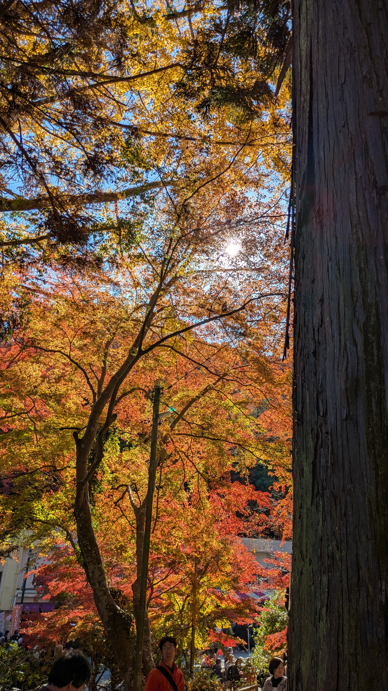

What's on at Mount Takao?
While Autumn boasts beautiful colours and large crowds, Mount Takao has events on year round! Find what's happening below.
Summer group hike
Date: 10 June 2026
Cost: 50 JPY
A challenging hike lead by our experienced hike-leader, enjoy beautiful views from the top of Takao-san and see Japan's lush greenery at the height of summer!
Early Autumn festival
Date: 17 September 2026
Cost: FREE
Come join the festivities on Mount Takao where the cool change of autumn is welcomed in, along with the beautiful changing colours. Enjoy a variety of special fall-themed foods, including grilled mochi and chestnut-flavoured desserts.